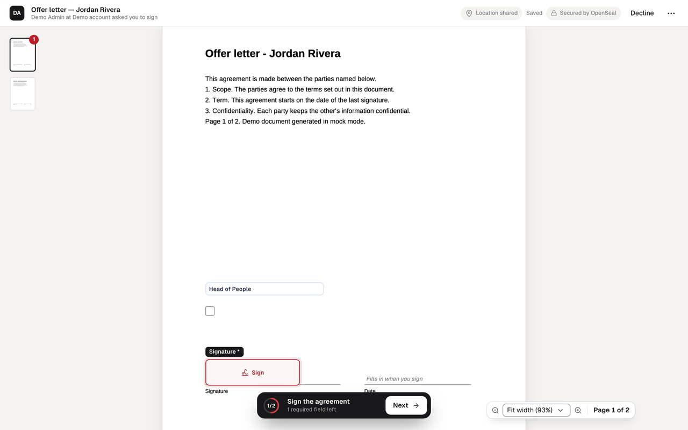
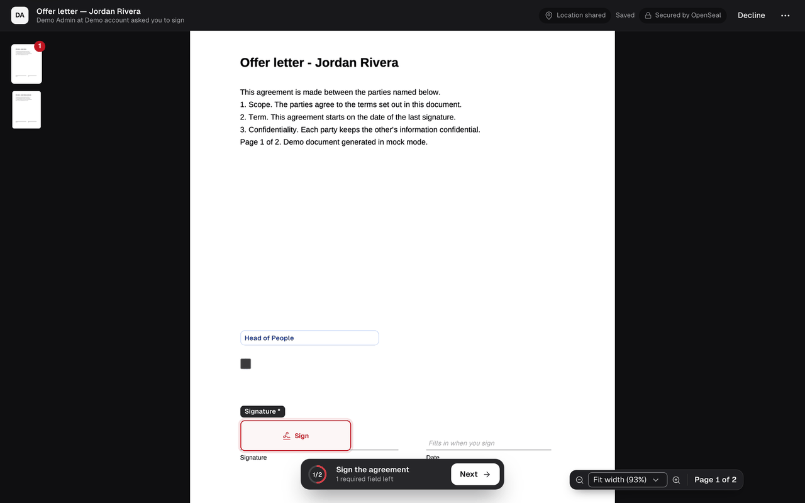
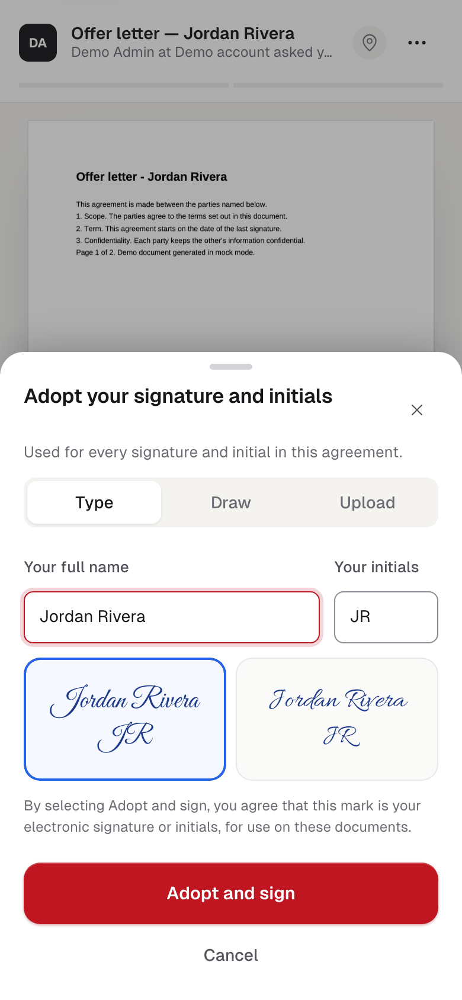
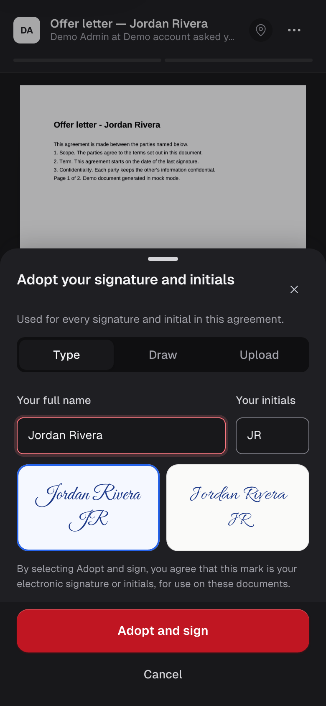
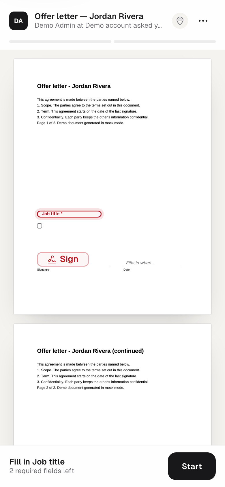
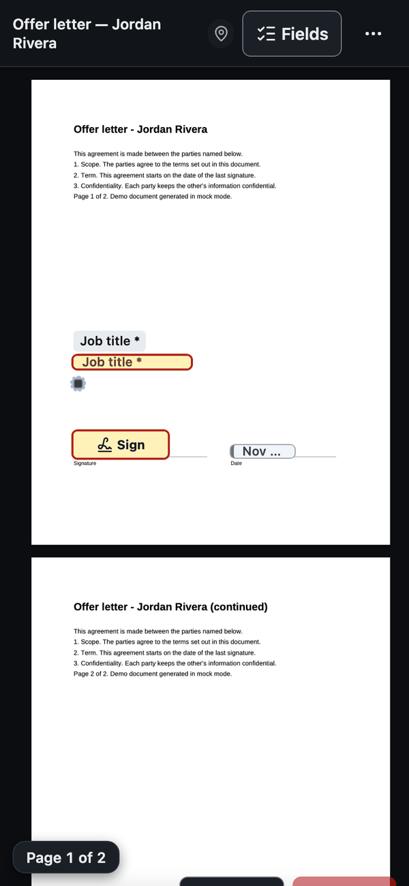
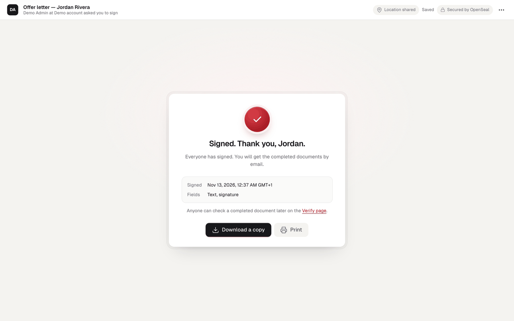
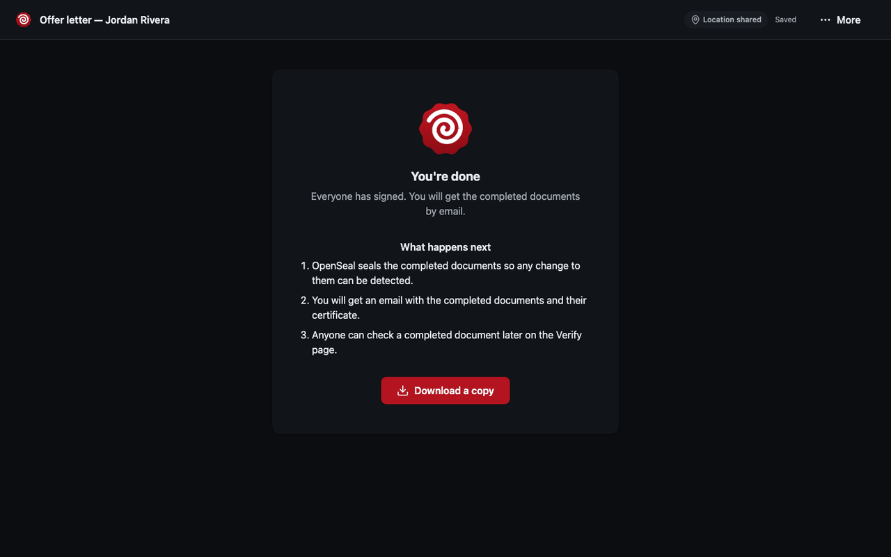

Signing
Signers need no account. They follow the link in their invitation, on a phone or a computer, and the page guides them through every field.
The steps
- Open the link. Each link is for one recipient of one envelope. It is bound to the browser that opens it first.
- Prove who you are, when the sender asked for it: an access code shared outside the email, a one-time code sent by email, text message or voice call, or signing in with an identity provider the operator has set up.
- Share your location, if you choose. The browser asks; declining is fine, and the certificate then records an approximate location from the network address, saying so.
- Consent to electronic records. The signer reads the disclosure and agrees to use electronic records and signatures. The version they accepted is recorded.
- Fill the fields. Start jumps to the first required field and Next to the one after. The list of fields on the side, or the Fields button on a phone, is an alternative to finding them on the page.
- Adopt a signature the first time a signature or initials field is chosen.
- Review and finish. The review shows the pages with every value in place. Finish is a separate, explicit action.


Adopting a signature
The name is filled in and can be edited. A signer can type it and pick one of the script styles, draw it with a mouse, finger or pen, or upload an image. By choosing Adopt and sign they agree that the mark is their electronic signature for these documents. The script fonts shown on screen are the same files the engine embeds in the sealed PDF.




Other actions
- Finish later keeps what was filled and lets the signer come back through the same link.
- Decline asks for a reason and ends the envelope for everyone; the sender is told.
- Withdraw consent to electronic records, which declines any required action.
When everyone has signed
The last signer sees a confirmation. The worker then flattens every value into the documents, adds the certificate of completion and the audit trail, seals the result and checks the seal before releasing it. Recipients are emailed when the sealed document is ready.


Accessibility
The signing page is designed for WCAG 2.2 AA: every field is reachable with Tab in reading order, required fields are named as required, the field list is an alternative to the page, typing a signature is the default, and text and controls meet contrast minimums in light and dark themes. An external audit (A11Y-01) is a release gate still ahead.